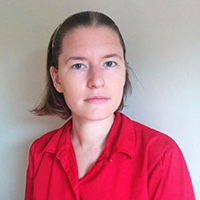

Center for Computer Security and Privacy
RESEARCH EDUCATION COMMUNITY
Vision Statement: The Center for Computer Security and Privacy at the University of Vermont is a catalyst and nexus for cybersecurity research and education at UVM. Activities supported by the Center include innovations in security solutions and development of training materials for today’s technology and science workforce, with a particular focus on health care and energy systems applications. The Center engages with the broader community at UVM, Burlington, and beyond to adapt and respond to changes in this very dynamic area of research.
To accomplish this, The Center:
- Supports research and innovative solutions in computer security and privacy.
- Facilitates relevant collaborations within UVM and the UVM Medical Center.
- Improves recruitment and retention of faculty and students.
- Conducts broader community outreach.
Core Team
Christian Skalka, Director
Areas of Expertise:
Programming language-based security, static program analysis, distributed authorization logics, foundations for network security. Primary appointment: Department of Computer Science. For more information about Dr. Skalka’s research, visit his website:
http://www.cs.uvm.edu/~ceskalka/
Jeremiah Onaolapo
Areas of Expertise: Cybersecurity, social network security, understanding malicious activity in online accounts. Primary appointment: Department of Computer Science. For more information about Dr. Onaolapo’s research, visit his website:
https://www.uvm.edu/~jonaolap/
Emma Tosch

Areas of Expertise: Programming language design, domain-specific languages, and reproducibility in research. Dr. Tosch is particularly interested in building languages and tools for data scientists and social scientists. Her work on SurveyMan has won first place in the 2014 ACM student research competition at PLDI, a best paper award at OOPSLA 2014, and a 2015 Outstanding Synthesis Award in the College of Computer and Information Sciences.
James Eddy
Areas of Expertise: Applied cybersecurity and cryptography, embedded systems programming, and computer organization/architecture. Primary appointment: Department of Computer Science.
Joseph Near
Areas of Expertise: Data privacy & differential privacy, software security, machine learning, program analysis and verification, programming languages & software engineering. Primary appointment: Department of Computer Science. For more information about Dr. Near's research, visit his website:
http://www.uvm.edu/~jnear/
Christelle Vincent
Areas of Expertise: Mathematical cryptography, specifically the explicit construction of abelian varieties for which the discrete log problem is difficult to solve. Primary appointment: Department of Mathematics and Statistics. For more information about Dr. Vincent’s
research, visit her website:
https://www.uvm.edu/~cvincen1/
Research Assistants
Research
The Programming LAnguages, Information security and Data privacy (PLAID) research lab at UVM